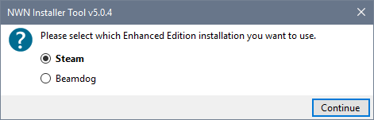
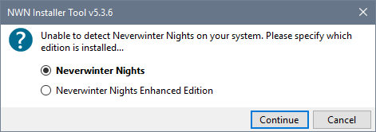
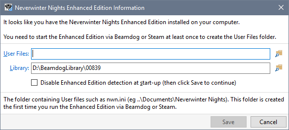
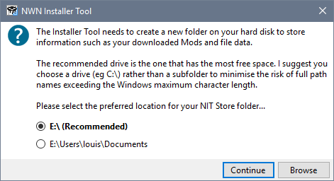
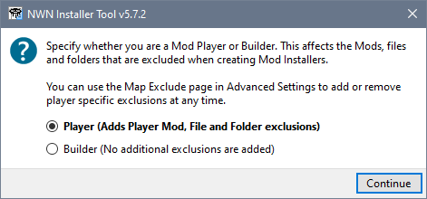
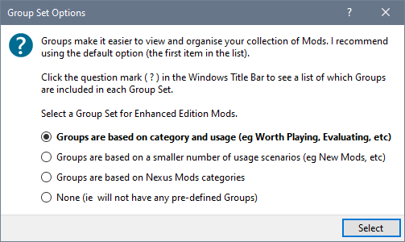
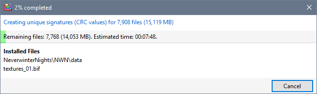
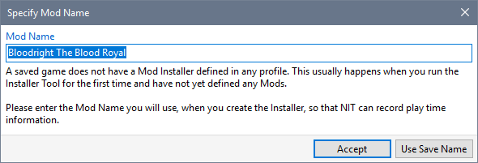
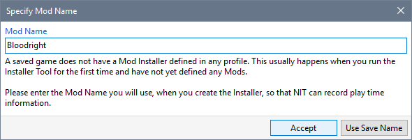
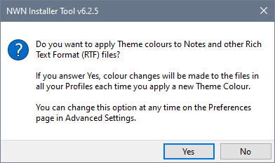

The first time you run the Installer Tool on your PC, you are asked to provide information that NIT needs to work properly.
Emboldened options in dialogues indicate the default action that is taken.
- If you have installed more than one version of the Enhanced Edition (eg Steam, Beamdog, GOG, etc), the Installer Tool asks which Library you want to use.

If the Installer Tool is unable to find Neverwinter Nights on your system, you are asked to specify which edition is installed so that the appropriate folders can be located.

- If the Installer Tool is unable to locate your Enhanced Edition User Files folder, the Tool asks you to specify the location. This may indicate that you have not used Beamdog or Steam to start Neverwinter Nights. If this is the case, then start the Enhanced Edition with Beamdog or Steam to create the User Files folder.

If you click Cancel, this message is displayed each time you start the Installer Tool. Tick (check) Disable Enhanced Edition detection at start-up and click Save to stop the message being displayed.
- The Installer Tool determines which drive on your computer has the most space and makes this the recommended setting. You can use the Browse button to select another drive or directory to use for the NIT Store folder.

- The tool asks whether you are a Player or Mod Builder in order to determine your initial Mod Installer exclusion preferences.

- The default Profile is loaded and, as part of its initialisation, you are asked to specify your Group Set preference.

- The contents of all installed files are processed so that unique identifiers (checksum values) can be generated for each file. This may take a while to complete.

- The Tool asks if you want to create Restorers for the default Profile. If you answer Yes, you may see some flickering as the different Restorers are created - this is normal.

- If you have a Game Save that is not recognised (because you have not yet created any Mod Installers), you are asked to specify which Mod you are playing.

Specify the name you are going to use when you create an Installer for this Mod and click Accept.

See Link Game Save to Mod name for more information about dealing with this message.
- You are asked whether you want to apply Theme Colours to any Notes you make and other Rich Text Format files you download. Answer Yes if you plan to use dark colour Themes or are unsure what you should do.

- The initialisation is completed.

If you have Neverwinter Nights and the Enhanced Edition installed, you need to load the Neverwinter Nights Mods profile (using Load Profile from the File menu) so that it can be initialised.
Related Topics
Key concepts and terminology
User Interface
Run the Installer Tool for the first time
Play Neverwinter Nights
Review Settings you may want to change
Deal with existing installed Mods